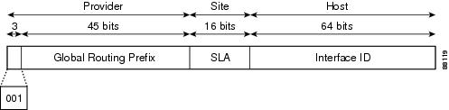
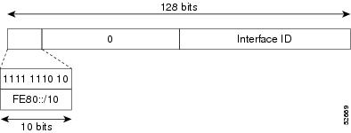
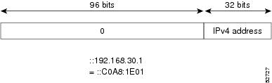
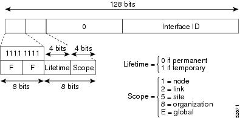
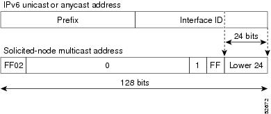
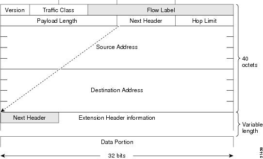

IPv6 Address formats
Table 2 Compressed IPv6 Address Formats
|——————————–|—————————————|———————————————–| |IPv6 Address Type| Preferred Format |Compressed Format |Unicast |2001:0:0:0:0DB8:800:200C:417A |2001::0DB8:800:200C:417A |Multicast|FF01:0:0:0:0:0:0:101|FF01::101 |Loopback|0:0:0:0:0:0:0:1|::1 |Unspecified|0:0:0:0:0:0:0:0|::
The loopback address listed in Table 2 may be used by a node to send an IPv6 packet to itself. The loopback address in IPv6 functions the same as the loopback address in IPv4 (127.0.0.1). The IPv6 loopback address cannot be assigned to a physical interface. A packet that has the IPv6 loopback address as its source or destination address must remain within the node that created the packet. IPv6 routers do not forward packets that have the IPv6 loopback address as their source or destination address. The unspecified address listed in Table 2 indicates the absence of an IPv6 address. For example, a newly initialized node on an IPv6 network may use the unspecified address as the source address in its packets until it receives its IPv6 address.
Aggregatable Global Address
An aggregatable global address is an IPv6 address from the aggregatable global unicast prefix. The structure of aggregatable global unicast addresses enables strict aggregation of routing prefixes that limits the number of routing table entries in the global routing table. Aggregatable global addresses are used on links that are aggregated upward through organizations, and eventually to the Internet service providers (ISPs). Aggregatable global IPv6 addresses are defined by a global routing prefix, a subnet ID, and an interface ID. Except for addresses that start with binary 000, all global unicast addresses have a 64-bit interface ID. The current global unicast address allocation uses the range of addresses that start with binary value 001 (2000::/3). Figure 2 shows the structure of an aggregatable global address.
Figure 2 Aggregatable Global Address Format

Addresses with a prefix of 2000::/3 (001) through E000::/3 (111) are required to have 64-bit interface identifiers in the extended universal identifier (EUI)-64 format. The Internet Assigned Numbers Authority (IANA) allocates the IPv6 address space in the range of 2000::/16 to regional registries.
The aggregatable global address typically consists of a 48-bit global routing prefix and a 16-bit subnet ID or Site-Level Aggregator (SLA). In the IPv6 aggregatable global unicast address format document (RFC 2374), the global routing prefix included two other hierarchically structured fields named Top- Level Aggregator (TLA) and Next-Level Aggregator (NLA).The IETF decided to remove the TLS and NLA fields from the RFCs, because these fields are policy- based. Some existing IPv6 networks deployed before the change might still be using networks based on the older architecture.
A 16-bit subnet field called the subnet ID could be used by individual organizations to create their own local addressing hierarchy and to identify subnets. A subnet ID is similar to a subnet in IPv4, except that an organization with an IPv6 subnet ID can support up to 65,535 individual subnets.
An interface ID is used to identify interfaces on a link. The interface ID must be unique to the link. It may also be unique over a broader scope. In many cases, an interface ID is the same as or based on the link-layer address of an interface. Interface IDs used in aggregatable global unicast and other IPv6 address types must be 64 bits long and constructed in the modified EUI-64 format.
Interface IDs are constructed in the modified EUI-64 format in one of the following ways:
For all IEEE 802 interface types (for example, Ethernet interfaces and FDDI interfaces), the first three octets (24 bits) are taken from the Organizationally Unique Identifier (OUI) of the 48-bit link-layer address (MAC address) of the interface, the fourth and fifth octets (16 bits) are a fixed hexadecimal value of FFFE, and the last three octets (24 bits) are taken from the last three octets of the MAC address. The construction of the interface ID is completed by setting the Universal/Local (U/L) bit—the seventh bit of the first octet—to a value of 0 or 1. A value of 0 indicates a locally administered identifier; a value of 1 indicates a globally unique IPv6 interface identifier. ie To denote unique interface address, flip the 2nd bit in the first octet: 0000 0000 (00) to 0000 0010 (02)
For all other interface types (for example, serial, loopback, ATM, Frame Relay, and tunnel interface types—except tunnel interfaces used with IPv6 overlay tunnels), the interface ID is constructed in the same way as the interface ID for IEEE 802 interface types; however, the first MAC address from the pool of MAC addresses in the router is used to construct the identifier (because the interface does not have a MAC address).
For tunnel interface types that are used with IPv6 overlay tunnels, the interface ID is the IPv4 address assigned to the tunnel interface with all zeros in the high-order 32 bits of the identifier.
- Note For interfaces using PPP, given that the interfaces at both ends of the connection might have the same MAC address, the interface identifiers used at both ends of the connection are negotiated (picked randomly and, if necessary, reconstructed) until both identifiers are unique. The first MAC address in the router is used to construct the identifier for interfaces using PPP.
If no IEEE 802 interface types are in the router, link-local IPv6 addresses are generated on the interfaces in the router in the following sequence:
Link-local Addresses
A link-local address is an IPv6 unicast address that can be automatically configured on any interface using the link-local prefix FE80::/10 (1111 1110 10) and the interface identifier in the modified EUI-64 format. Link-local addresses are used in the neighbor discovery protocol and the stateless autoconfiguration process. Nodes on a local link can use link-local addresses to communicate; the nodes do not need site-local or globally unique addresses to communicate. Figure 3 shows the structure of a link-local address.
IPv6 routers must not forward packets that have link-local source or destination addresses to other links.
Figure 3 Link-local Address Format

IPv4-Compatible IPv6 Addresses
An IPv4-compatible IPv6 address is an IPv6 unicast address that has zeros in the high-order 96 bits of the address and an IPv4 address in the low-order 32 bits of the address. The format of an IPv4-compatible IPv6 address is 0:0:0:0:0:0:A.B.C.D or ::A.B.C.D. The entire 128-bit IPv4-compatible IPv6 address is used as the IPv6 address of a node and the IPv4 address embedded in the low-order 32 bits is used as the IPv4 address of the node. IPv4-compatible IPv6 addresses are assigned to nodes that support both the IPv4 and IPv6 protocol stacks and are used in automatic tunnels. Figure 4 shows the structure of an IPv4-compatible IPv6 address and a few acceptable formats for the address.
Figure 4 IPv4-Compatible IPv6 Address Format

IPv6 Multicast Address
An IPv6 multicast address is an IPv6 address that has a prefix of FF00::/8 (1111 1111). An IPv6 multicast address is an identifier for a set of interfaces that typically belong to different nodes. A packet sent to a multicast address is delivered to all interfaces identified by the multicast address. The second octet following the prefix defines the lifetime and scope of the multicast address. A permanent multicast address has a lifetime parameter equal to 0; a temporary multicast address has a lifetime parameter equal to 1. A multicast address that has the scope of a node, link, site, or organization, or a global scope has a scope parameter of 1, 2, 5, 8, or E, respectively. For example, a multicast address with the prefix FF02::/16 is a permanent multicast address with a link scope. Figure 5 shows the format of the IPv6 multicast address.
Figure 5 Multicast Address Format

IPv6 nodes (hosts and routers) are required to join (receive packets destined for) the following multicast groups:
- All-nodes multicast group FF02:0:0:0:0:0:0:1 (scope is link-local)
- Solicited-node multicast group FF02:0:0:0:0:1:FF00:0000/104 for each of its assigned unicast and anycast addresses
IPv6 routers must also join the all-routers multicast group FF02:0:0:0:0:0:0:2 (scope is link-local).
The solicited-node multicast address is a multicast group that corresponds to an IPv6 unicast or anycast address. IPv6 nodes must join the associated solicited-node multicast group for every unicast and anycast address to which it is assigned. The IPv6 solicited-node multicast address has the prefix FF02:0:0:0:0:1:FF00:0000/104 concatenated with the 24 low-order bits of a corresponding IPv6 unicast address. (See Figure 6.) For example, the solicited-node multicast address corresponding to the IPv6 address 2037::01:800:200E:8C6C is FF02::1:FF0E:8C6C. Solicited-node addresses are used in neighbor solicitation messages

The basic IPv6 packet header has 8 fields with a total size of 40 octets (320 bits). (See Figure 7.) Fields were removed from the IPv6 header because, in IPv6, fragmentation is not handled by routers and checksums at the network layer are not used. Instead, fragmentation in IPv6 is handled by the source of a packet and checksums at the data link layer and transport layer are used. (In IPv4, the User Datagram Protocol (UDP) transport layer uses an optional checksum. In IPv6, use of the UDP checksum is required to check the integrity of the inner packet.) Additionally, the basic IPv6 packet header and Options field are aligned to 64 bits, which can facilitate the processing of IPv6 packets.

Table 4 IPv6 Extension Header Types
| Header Type | Next Header Value | Description |
|---|---|---|
Hop-by-hop options header |
0 |
This header is processed by all hops in the path of a packet. When present, the hop-by-hop options header always follows immediately after the basic IPv6 packet header. |
Destination options header |
60 |
The destination options header can follow any hop-by-hop options header, in which case the destination options header is processed at the final destination and also at each visited address specified by a routing header. Alternatively, the destination options header can follow any Encapsulating Security Payload (ESP) header, in which case the destination options header is processed only at the final destination. |
Routing header |
43 |
The routing header is used for source routing. |
Fragment header |
44 |
The fragment header is used when a source must fragment a packet that is larger than the maximum transmission unit (MTU) for the path between itself and a destination. The Fragment header is used in each fragmented packet. |
Authentication header and ESP header |
51
50 |
The Authentication header and the ESP header are used within IP Security Protocol (IPSec) to provide authentication, integrity, and confidentiality of a packet. These headers are identical for both IPv4 and IPv6. |
Upper-layer header |
6 (TCP) 17 (UDP) |
The upper-layer (transport) headers are the typical headers used inside a packet to transport the data. The two main transport protocols are TCP and UDP. |
Mobility header |
To be done by IANA |
Extension headers used by mobile nodes, correspondent nodes, and home agents in all messaging related to the creation and management of bindings. |
8 set of hexadecimal numbers separated by :
2 character = 1 byte
First 64 bit for network and last 64 bit for host (calculated automatically)
Leading bits tell what class – format prefix (FP)
Aggregate global unicast 001 2000 – 3FFF
Link-local unicast 1111 1110 10 FEC0
Site-local unicast 1111 1110 11 FE80
Multicast 1111 1111 FF
Gap in there is unassigned for future …
Auto-generation of host address done using this algorithm
Take MAC – 1234.5678.9012
Invert 7th most significant digit – 1034.5678.9012
Insert FFFE in the middle – 1034:56FF:FE78:9012
And this gives us the modified EUI
Address resolution
No ARP anymore. ICMPv6 ND (neighbor discovery) instead
NBMA – multipoint need address resolution. must do statically today because inverse neighbor discovery not in IOS yet.
ICMPv6 ND has four communication types
NS (neighbor solicitation): ask for info on the neighborsNA (neighbor advertisement): advertise self to other neighborsRS (router solicitation): ask for local routersRA (router advertisement): advertise self as active router
Startup process
Select a link local address (FEC0 + 64bit EUI)
Send NS to solicited node multicast FF02::1:FFxx:xxxx:/104 + 24 lower order bits (last 6 digits of above link local address)
Send this for our link local and global address to see if we are unique
If no reply back, then have unique address – DAD (duplicate address detection)
In this case, send unsolicited NA to all host multicast saying I am active – FF02::1 (same as 255.255.255.255 – local link broadcast)
No concept of proxy ICMPv6 ND (equivalent to proxy arp). Reason is because we send it to solicited node multicast address in IPv6 vs. broadcast address in IPv4. So if router was to try to run proxy ICMPv6 ND would have to join every possible multicast solicited node address
To enable IPv6 on an interface use the ipv6 enable command. We haven’t assigned an IP at this point so only link-local processing enabled.
show ipv6 neighbor is same as show ip arp in IPv4
If assign a global address on a router, it will start broadcasting that for autoconfig. So when host comes up, it will know what prefix to use for itself. Can even enable autoconfig address on router using ipv6 address autoconfig
If we set static route pointing to the interface to go out of, then we have an address resolution issue. Need to make a static binding pointing the L3 address to the next-hop MAC. On ethernet static binding is ipv6 neighbor address interface MAC since no proxy ARP equivalent. May work for a couple of hosts but won’t scale.
Routing
RIPng and OSPF use separate process from v4
BGP and IS-IS use same process as v4
RIPng
UDP 521 multicast to FF02::9
Enabled per interface using ipv6 rip process-name enable
Routing recourses to remote link local address. So when looking in routing table it will show the link local address as the next-hop.
On FR need to map the link-local and global unicast address to the DLCI. Ultimately need the link local to route and forward packets so definitely need them.
Can hard-configure the link local address using ipv6 address address link-local
Split-horizon is enabled by default. Disabled at the process level not interface level
Clearing routing table no longer refreshes the dynamic routes. Need to clear the routing process using clear ipv6 rip process-name
ND – ARP … so ethernet only
OSPFv3
Similar to OSPFv2
Router-id is still an IPv4 address. So if no IPv4 address on an interface in up/up, issue router-id command and give it one. Similar issue with BGP
Can enable globally or if you enable on interface using ipv6 ospf process-id area area it also enables it globally. No network command.
Same network types as IPv4. When unicast’ing, sending to link-local so make sure they are reachable. Also, neighbor command is done at interface level using ipv6 ospf neighbor link-local-address
Again non-broadcast network recourses to link local address so need to map those to DLCI too. Way to avoid all these maps is to run it as point-to- multipoint. In this case update next-hop and use MAC address of next-hop (hub) and so just need map statement for that MAC.
BGP
Similar to IPv4. Configured under same process using the address-family class. Similar to MPLS with VRF’s. Configure neighbor statement as before with remote-as, but then need to activate them.
- router bgp process
- neighbor address remote-as AS
- address-family ipv6
- neighbor address activate
By default, all ipv4 address are automatically activated because bgp default ipv4-unicast is on by default.
Tunneling
Static
GRE – default tunnel mode. Can encapsulate a lot more protocolsIPv6IP – less overhead, no CLNS transport
Automatic
6to4 – imbed IPv4 in IPv6 prefix to provide automatic tunnelendpoint determination
ISATAP – automatic host to router and host to host tunneling. TunnelIPv6 over IPv6
GRE is same as before, just with ipv6 address
Tunnel mode sets which of above
6to4:
Derive IPv6 address as 2002:_IPv4-address_::/48
Single /48 subnetted amongst sites
Only one tunnel needed for all destinations
Dynamically figure out tunnel destination from the IPv6 address
Source of the tunnel has to be the interface embedded as IPv4 address